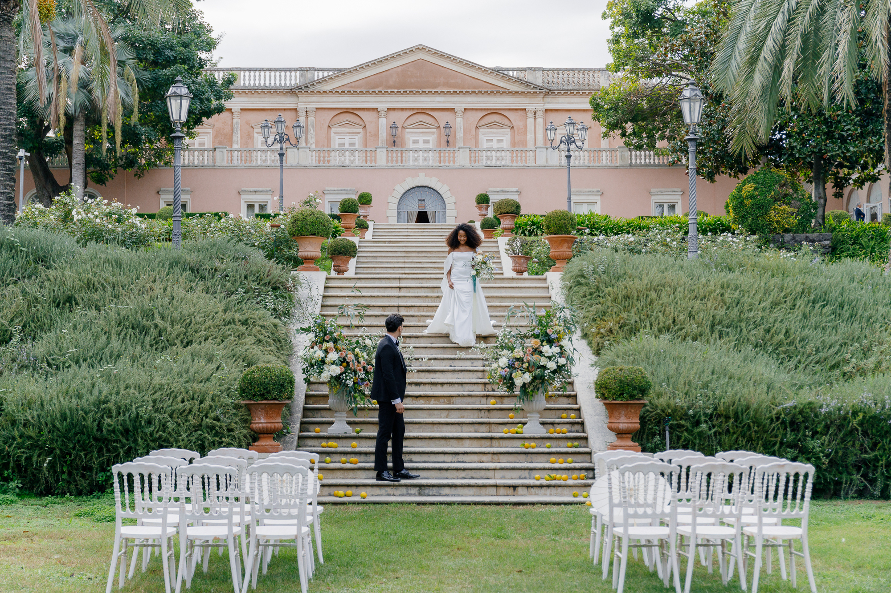
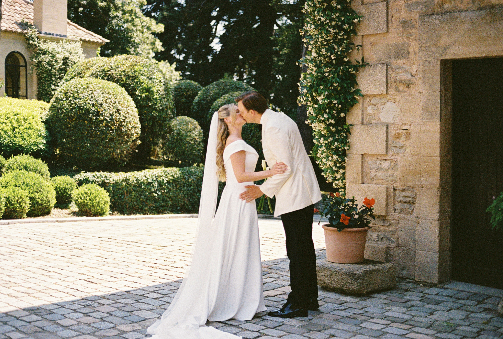

Mon approche photographique, c'est un doux mélange de photojournalisme esthétique et d'images artistiques, émotionnelles et sincères.


Destination Weddings
J'ai une chance incroyable de travailler avec des personnes extraordinaires : des âmes bienveillantes, des cœurs généreux, des familles merveilleuses. Chaque mariage que je capture est bien plus qu'un simple événement ; c'est un chapitre précieux dans la vie de quelqu'un, rempli d'émotions, de rires et de moments inoubliables.
Merci à tous mes merveilleux couples pour votre confiance, votre chaleur, et pour me permettre de raconter votre amour de la manière la plus authentique qui soit.
Voir la galerie mariagesSalut ! Je suis Syrga
Je suis née à Bichkek, capitale du Kirghizistan. Mais le destin m'a amenée en France, où je vis depuis 19 ans. Je parle kirghize, russe, français et anglais. Je crois en une approche naturelle et authentique de la photographie de mariage : des images lumineuses et élégantes, des compositions soignées et une attention particulière aux détails.
En savoir plus“Vous avez réussi à nous rendre photogéniques ! Nous sommes vraiment ravis de votre travail, vous êtes sacrément douée. Nous tenions à vous remercier infiniment d'avoir répondu à notre demande de dernière minute et à nos attentes. On ne pouvait pas espérer mieux.”
